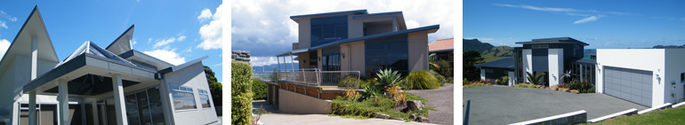
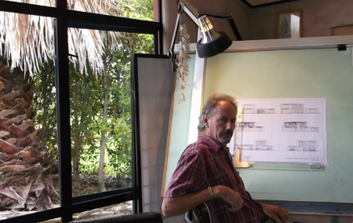
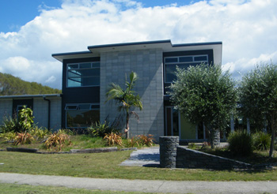

Trevor Neal
NZCD (ARCH) 1976
WHITIANGA
MERCURY BAY
COROMANDEL PENINSULA
NEW ZEALAND
A lifetime to the building industry
Two previous generations paved the way.
ARCHITECTURAL Draughting cadetship served with the Ministry of Works- Auckland
After qualifying I chose to become a builder on a commercial site.
A partnership was formed with a highly skilled builder for residential & commercial buildings.
ARCHITECTURAL DESIGN work featured in this time.
I later commenced my own ARCHITECTURAL DESIGN & BUILD for many years.
In 1996 NEAL PROJECTS was formed.
PROJECT MANAGEMENT is now part of my skills on offer.
My approach to ARCHITECTURAL DESIGN is from an artist’s point of view.
I can bring my qualification, knowledge & experience to your PROJECT.
It is my mission to hear your ideas & bring them to fruition.
The challenge of a specific site for a specific client is what i enjoy.
Feel free to peruse the photo gallery of some of my previous ARCHITECTURAL DESIGN
